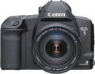

无忌
器材库
全部器材
产品年表
名词百科
榜单
器材库
> 胶片单反相机 > EOS 3

佳能
EOS 3
4.54
综合评分
分类
胶片单反相机
点评
0 条
图片
0 张
评测
0 篇
一款针对专业摄影人员和高级摄影爱好者的高端单反相机。本相机采用许多创新功能，如45点区域自动对焦、高速且精确的眼控对焦和7张/秒高速预测自动对焦连拍模式。
产品类型
胶片单反相机
综合评分
4.54分
无忌评测
暂无评测
规格参数
网友点评
(0)
产品图 / 样片
(0)
评测文章
(0)
规格总览
产品类型
自动对焦胶片单反相机
发布日期
1998-10
厂家推荐价格
185,000.00 （日元）
使用胶卷/胶片
35mm胶片
镜头卡口
Canon EF
停产
是
取景规格
取景器
眼平五棱取景器, 固定
取景范围
97%
取景放大倍率
0.72倍
取景视点
20mm
对焦屏
可更换, 9种
反光镜
快速瞬回半透明
取景器信息
全信息
景深预视
有
对焦系统
自动对焦系统类型
TTL-CMOS
对焦点
45，15mmx8mm
AF检测范围
0EV～18EV
对焦模式
单次AF, MF, 人工智能伺服AF
自动对焦点选择
自动, 手动, 眼控选择
所选自动对焦点显示
LED叠加指示
AF辅助灯
有
曝光控制
测光模式
中央重点测光, 多分区评价测光, 局部测光
测光范围
0EV~20EV
曝光模式
A（光圈优先自动曝光）, S（快门速度优先自动曝光）, M（手动测光曝光）, DEP（景深优先自动曝光）, E-TTL 自动闪光, 可偏移程序P, TTL闪光灯程序曝光, A-TTL程序闪光AE
ISO感光度
M：6-6400-DX：25-5000
曝光补偿
手动曝光补偿EV以1/3EV级调整
自动包围曝光
有
多重曝光
有
自动曝光锁
有
快门
快门类型
电子控制，纵走式，焦平面快门
快门速度
1/8000 - 30秒 + B
闪光同步速度
1/250秒
自拍
10秒, 2秒
无线遥控
有
外接闪光灯
外接闪光灯
A-TTL自动闪光 TTL自动闪光 E-TTL自动闪光
过片系统
过片模式
单张, 连续
回片
自动退卷，可中途退卷
用户自选功能
用户自选功能
18种
电源
电池
1枚2CR5锂电池
电池检测
有
外观
颜色
黑色
尺寸
161 x 119.2 x 70.8mm
重量
780g
该产品暂无存档的网友点评
该产品暂无存档的产品图
评测 / 相关文章
该产品暂无存档的评测文章
相关文章
［试用］老坛装新酿，我的2015
（存档）
［资讯］探秘EOS传奇（上）
（存档）